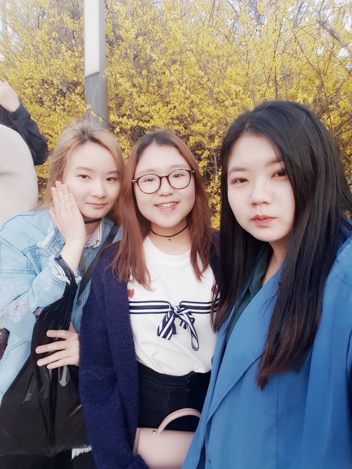
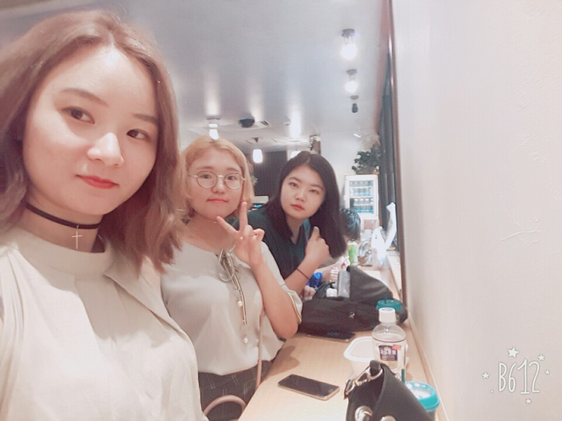
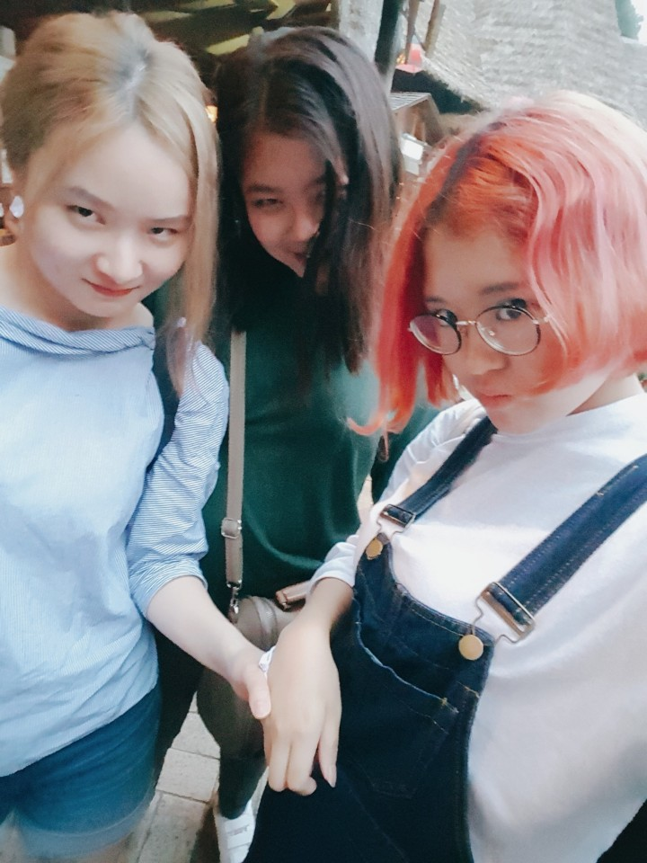
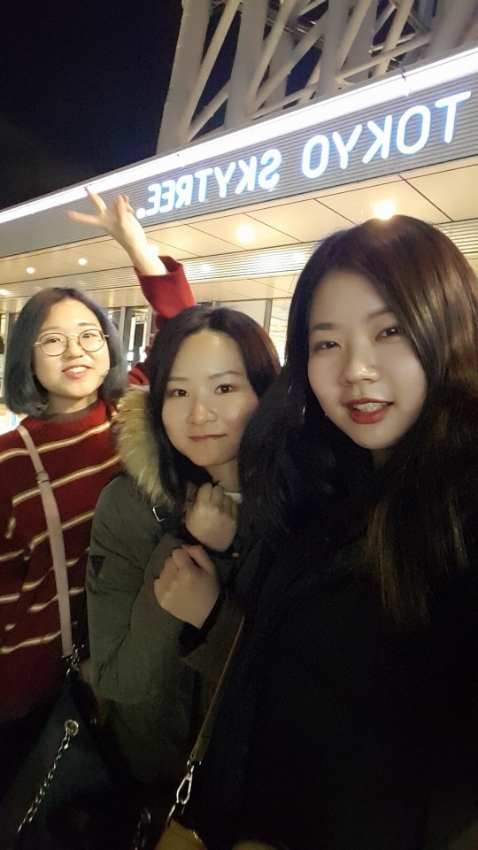
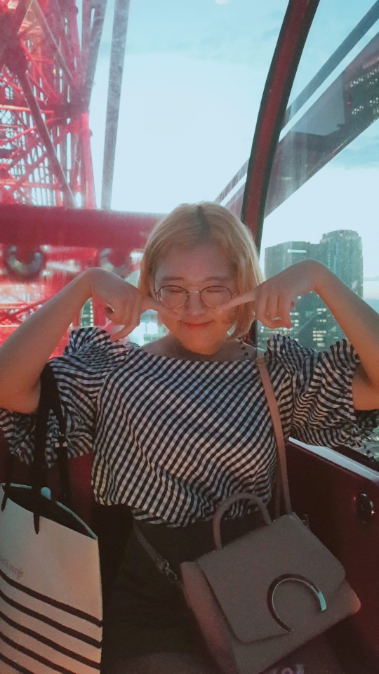
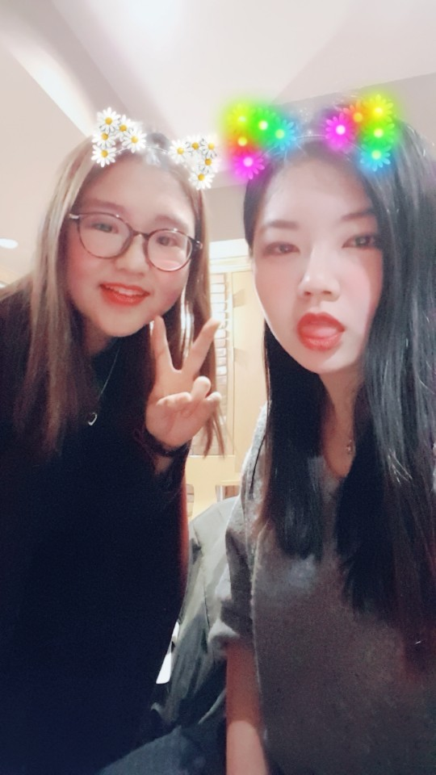
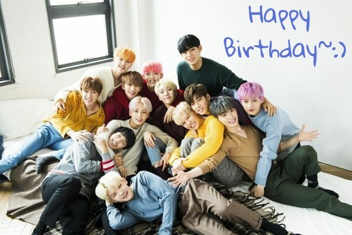

은주야 안녕~
생일 축하해!! Happy Birthday!!
직접 생일을 챙겨주지 못하니까 뭘 해주면 좋을까 생각하다가
생일 선물을 대신해 너를 위한 웹페이지를 만들게 되었습니다~!!
일회용이지만 언제든 볼 수 있으니까 온라인 상의 편지 정도로 생각해주면 좋겠어ㅎㅎ
민경이 생일은 8월이고, 내 생일은 12월이라 방학을 이용해서
놀러가기도 하고, 특별한 이벤트도 하고 했던 거 같은데
네 생일은 학기 끝날 때쯤인데다가 시험 얼마 전이라 시간 맞추기가 어려워서
제대로 챙기고 넘어간 적이 별로 없는 것 같더라고.
너가 딱히 티를 내지는 않지만 내심 서운하지 않을까 싶어서
내 능력은 많이 부족하지만, 이것저것 시도해봤어^^
내 생일 놓쳤다고 그림도 그려주고 영상도 찍어줬는데 나도 이 정도는 해줘야지?!
참고로 배경색은 세븐틴 색인 로즈쿼츠와 세레니티로 맞췄어ㅋㅋㅋㅋㅋ
좀더 이쁘게 꾸밀 수 있으면 좋겠는데 내가 아직 배운 게 여기까지라 아직 많이 허접합니다..
그래두 내 마음을 받아주~♡
우리 올해로 8년지기 친구가 되었습니다!!@.@
아, 이제 곧 9년지기가 되겠군요?!ㅎㅎㅎㅎ
올해가 한 달 정도밖에 안 남은 거 실화냐...
오랫동안 나랑 친구 해줘서 고맙고,
내 성격이 좋지만은 않은데 잘 받아주고 놀아줘서 진짜 감사합니다(--)(__)(--)
나랑 민경이 사이에 껴서 고생이 많았어... 우리 착한 은주(눙물)
앞으로도 잘 부탁하고, 우리가 지내온 시간보다 더 많은 시간 함께 합시다!!:)
아 그리고 못 가게 된 유럽은 10주년을 기념해서 우정 여행을 떠나는 게 어때?
물론 민경이가 취직하고 나서 휴가를 낼 수 있어야 가능하겠지만...
일정 잘 조율하면 가능할 것도 같구... 어떻게든 더 늦기 전에 꼭 갑시다!!
대신에 이번에는 동남아를 가는 거야!!! 예!!!
매번 가자고만 하고 가지 못했던 동남아를 드디어 갑니다~
틈틈이 일정 조율하고 알아봐서 나 귀국하기 전까지 픽스하도록 합시다.
미리 이것저것 알아보고 가서 진짜 재미있게 놀고 오자♡
뭔가 좀더 특별한 편지처럼 만들고 싶어서 사진을 조금 넣어봤어ㅎㅎ




8년이라는 짧다면 짧고 길다면 긴 시간동안
봄, 여름, 가을, 겨울 4계절을 같이 보낼 수 있어서 즐거웠어.
만날 때마다 그땐 그랬었지 하면서 함께 공유할 수 있는 기억들이 있는 건 참 좋은 것 같아.
앞으로 더 즐겁고 예쁜 추억들 많이 만들어가자!
졸업하고, 취준하고, 취직해서 일하고 앞으로 더 바빠지고 정신 없어지겠지만
시간 내서 자주 만나고 맛있는 것도 먹으러 가고 좋은 데 구경하러도 떠나기도 합시다.
우리가 살아갈 날 중에서 언제나 오늘이 가장 젊은 법이니까!!ㅋㅋㅋㅋㅋ

그리고 그동안 일본 여행 때마다 가이드 역할하느라 고생 많았고, 고마웠어!
일어바보들 데리고 고생이 많으셨습니다...ㄸㄹㄹ
그래도 덕분에 매번 일본 여행 즐겁게 하고 올 수 있었던 것 같아ㅎㅎ
이제는 일본도 좋지만 좀더 멀리 나가봅시다.
영어 쓰는 데서는 제가, 좀, 노력해보겠습니다..ㅋㅋㅋㅋㅋㅋ

그러니까 앞으로도 잘 부탁해용!!
얘가 외국 나가서 영어 안 하고 뭐 이런 거 하고 있나 싶을 수도 있는데,
원래 시험기간에는 공부 빼고 다 재미있는 법이잖아.
외국에 나와있으니까 영어 빼고 다 재미있어.... < 큰일
하지만 나름 영어도 열심히는 하고 있어...하하하...
그리고 내 덕질 굿즈들을 대신 받아주시는 거 정말 감사합니다.
진짜 이 은혜 어떻게 갚을지...(따흑)ㅋㅋㅋㅋㅋ
중고등학교 때는 애니 덕질로, 대학생이 되어서는 가수 덕질로 하나 되는 우리를 보니
친구가 될 인연이긴 하가보다 싶기도 하고,
오래 친구하면서 서로 닮아가는 건가 싶기도 하고
어찌됐든 우리가 잘 맞는 친구라서 너무 기쁩니다ㅎㅎ
잡소리가 좀 많이 길었으니 이제 슬슬 마무리를 지을게
사실 편지 오랜만에 써봐서 좀 어색해서 좀 두서없이 써놓은 것 같긴 한데 그냥 그러려니 해주고
이걸 만든 진짜 목적은 생일 축하니까 생일을 축하하면서 마무리지어야 겠지?
진심으로 생일 축하하고, 가족들이랑 즐거운 시간 보내고, 맛있는 것도 많이 먹고!
한국 많이 추울텐데 감기 조심하고 건강 챙기구
마지막으로 세븐틴 사진을 한 장 투척하고 사라지겠습니다...뿅!
